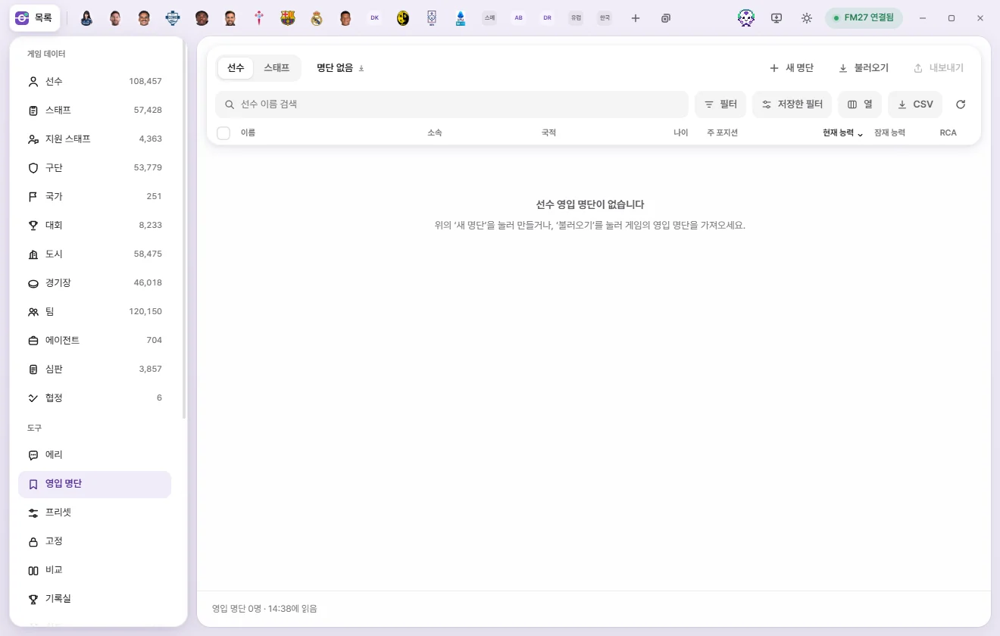
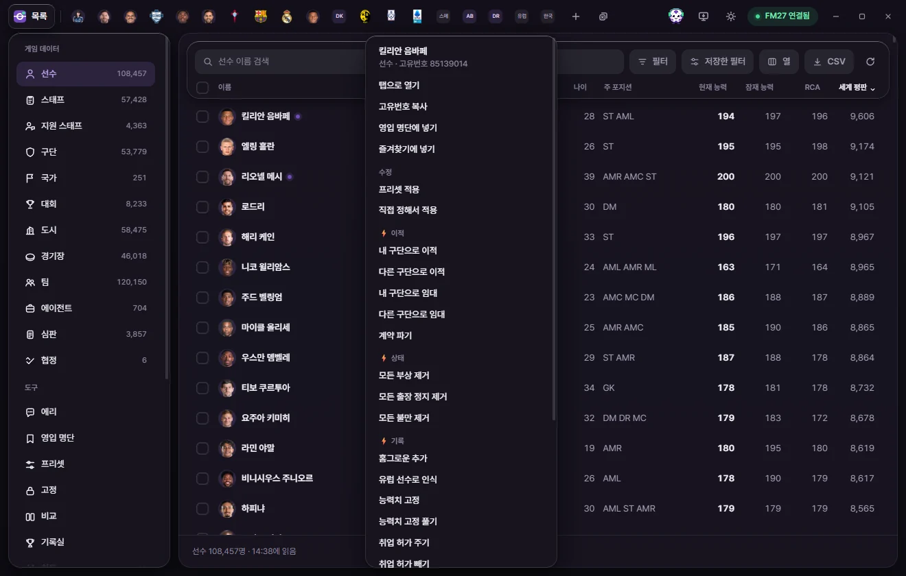
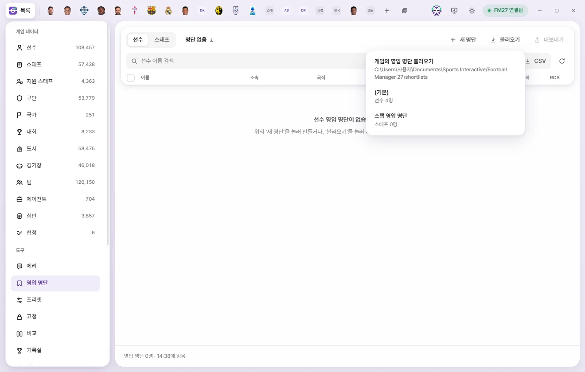
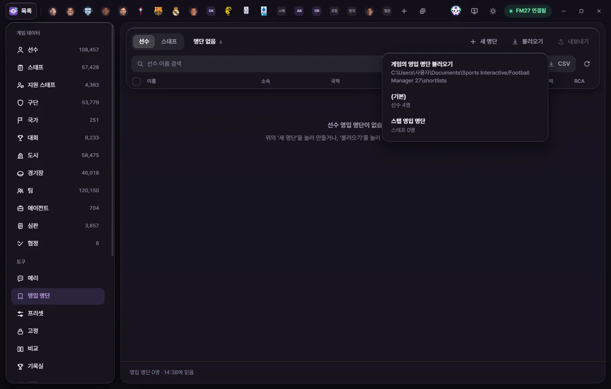

도구
영입 명단
선수와 스태프를 이름 붙은 명단으로 모읍니다. 세이브마다 따로 남고, 게임의 영입 명단 파일(.fmf)로 내보내거나 게임의 명단을 불러올 수 있습니다.


영입 명단이란
FMLE 안에 이름 붙은 명단을 여러 개 만들어 둘 수 있습니다.
- 선수 명단과 스태프 명단은 따로입니다. 위 막대 왼쪽의 선수, 스태프로 바꿉니다.
- 세이브마다 따로 남습니다. 게임에서 다른 세이브를 열면 그 세이브의 명단으로 바뀝니다. 다른 이름으로 저장한 세이브는 명단을 이어받습니다(세이브마다 따로 기억하는 것).
- 명단은 FMLE에만 있는 것이라 게임 값을 바꾸지 않습니다. 게임에서 보려면 .fmf 파일로 내보냅니다.
화면 둘러보기
위 막대에 있는 것:
| 단추 | 하는 일 |
|---|---|
| 선수 / 스태프 | 선수 명단과 스태프 명단을 바꿉니다 |
| 명단 고르기 (지금 명단 이름과 인원) | 이 세이브의 명단 목록이 열립니다. 다른 명단을 고르거나, 이름 바꾸기, 이 명단 지우기를 합니다 |
| 새 명단 | 이름을 넣고 만들기를 누르면 빈 명단이 생기고 바로 그 명단이 열립니다 |
| 불러오기 | 게임의 영입 명단 폴더에 있는 .fmf 파일을 골라 FMLE 명단으로 가져옵니다 |
| 내보내기 | 지금 명단을 게임의 영입 명단 폴더에 .fmf 파일로 씁니다 |
아래 표는 선수 목록과 같습니다. 열 고르기, 필터, 정렬, 검색, 체크 칸, 전체 선택, 오른쪽 클릭 메뉴를 그대로 씁니다. 열과 필터는 선수 목록과 따로 기억합니다.
이름이 같은 명단을 또 만들면 뒤에 '(2)'처럼 번호가 붙습니다. 명단 이름은 60자까지입니다.
명단에 넣기
어디서든 넣을 수 있습니다. 이미 명단에 있는 사람은 한 번만 들어갑니다.
- 목록에서: 선수나 스태프 목록에서 줄을 체크하고 아래 막대의 영입 명단에 넣기를 누른 뒤 명단을 고릅니다.
- 오른쪽 클릭: 목록 줄, 검색 결과, 탭 안 표의 줄, 이름 링크를 오른쪽 클릭하고 영입 명단에 넣기를 고릅니다. 여러 줄을 골라 둔 채 그중 하나를 오른쪽 클릭하면 고른 사람이 모두 들어갑니다.
- 구단 탭에서: 선수단 표나 스태프 표의 체크 칸으로 골라 두면 탭 아래에 막대가 뜹니다. 영입 명단에 넣기를 누릅니다.
- 에리에게서: 에리의 영입 후보 카드의 후보 n명 영입 명단에 넣기, 또는 에리가 띄운 영입 명단 카드를 실행합니다(에리).
명단을 고르는 메뉴 맨 아래 새 명단을 만들어 넣기를 누르면 이름을 묻고 새 명단에 바로 넣습니다. 넣은 뒤 '‘명단 이름’에 n명을 넣었습니다'가 뜹니다.


명단에서 빼기
- 영입 명단 화면에서 뺄 사람을 체크합니다.
- 아래 막대의 명단에서 빼기를 누릅니다. 또는 줄을 오른쪽 클릭하고 이 명단에서 빼기를 고릅니다.
확인 없이 바로 빠집니다. 다시 넣으려면 위 '명단에 넣기'처럼 넣습니다.
명단 이름 바꾸기와 지우기
위 막대의 명단 이름 단추를 누르면 메뉴 아래에 이름 바꾸기와 이 명단 지우기가 있습니다.
게임과 주고받기
게임의 영입 명단 폴더는 문서\Sports Interactive\Football Manager 27\shortlists입니다. FMLE는 이 폴더의 .fmf 파일을 직접 읽고 씁니다.
내보내기
- 내보낼 명단을 고르고 내보내기를 누릅니다.
- '‘명단 이름.fmf’로 내보냈습니다 (n명)'이 뜹니다. 파일 이름에 쓸 수 없는 글자는
_로 바뀝니다. - 게임의 영입 명단 화면에서 톱니바퀴 → 영입 명단 불러오기로 그 파일을 엽니다.
같은 이름의 파일이 폴더에 있으면 덮어쓸지 묻습니다. 덮어쓰기를 누르면 그 파일이 지금 명단으로 바뀝니다.
불러오기
- 불러오기를 누르면 폴더의 .fmf 파일 목록이 뜹니다. 파일마다 선수·스태프 구분과 인원이 보입니다.
- 파일을 고르면 같은 이름의 새 FMLE 명단이 생기고 그 명단이 열립니다.
게임에서 톱니바퀴 메뉴로 저장한 명단도, FMLE가 내보낸 명단도 불러올 수 있습니다. 목록이 비어 있으면 게임의 영입 명단 화면에서 먼저 톱니바퀴 메뉴로 명단을 저장하세요. '읽을 수 없는 파일입니다'로 보이는 파일은 고를 수 없습니다.



불러온 명단에 지금 게임에 없는 사람이 있으면 'n명 중 m명을 이 게임에서 찾았습니다'라고 알려 줍니다. 다른 세이브에서 만든 명단이면 이렇게 될 수 있습니다.
다른 목록에 보이는 표시
선수·스태프 목록과 구단 탭의 선수단·스태프 표에서, 명단에 든 사람의 이름 옆에 작은 책갈피 표시가 붙습니다. 마우스를 올리면 그 사람이 든 명단 이름이 보입니다. 영입 명단 화면 안에서는 모두 명단에 든 사람이라 표시하지 않습니다.
빈 화면이 보일 때
| 화면 글 | 할 일 |
|---|---|
| 선수(스태프) 영입 명단이 없습니다 | 새 명단으로 만들거나 불러오기로 게임의 명단을 가져옵니다 |
| ‘명단 이름’에 아직 아무도 없습니다 | 목록에서 골라 영입 명단에 넣기를 누릅니다 |
| 조건에 맞는 사람이 없습니다 | 검색어나 필터를 바꿉니다 |
| 명단의 n명을 이 게임에서 찾지 못했습니다 | 다른 세이브의 명단일 수 있습니다 |